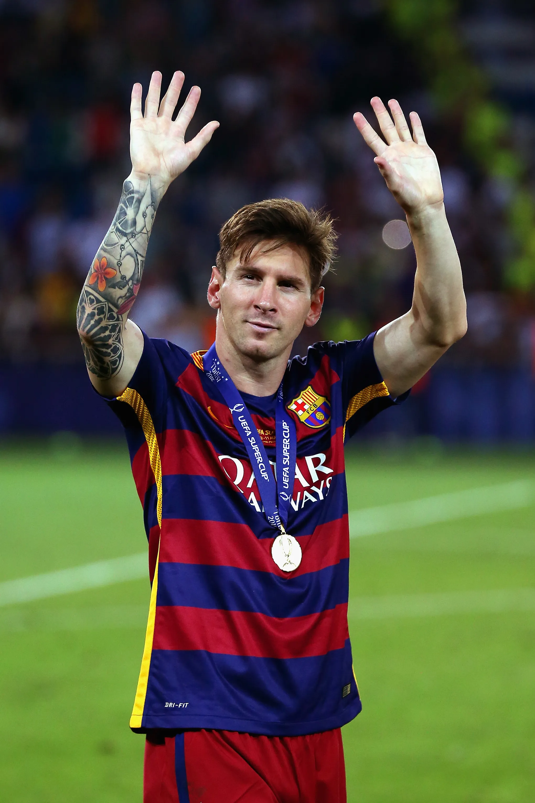

Tribute to Lionel Messi
About Messi
Born: 24 June 1987 • Rosario, Argentina
Lionel Andrés Messi is an Argentine professional footballer, widely considered one of the greatest players in history. Known for his dribbling, playmaking, and record-breaking goal scoring, Messi has inspired millions across the globe. He has played for FC Barcelona, Paris Saint-Germain, and currently Inter Miami, while also leading Argentina to international glory.
Important Events
- 2004 – Debuts for FC Barcelona’s first team at 17 years old.
- 2009 – Wins first Ballon d’Or.
- 2012 – Sets world record with 91 goals in a calendar year.
- 2021 – Wins Copa América with Argentina.
- 2022 – Captains Argentina to FIFA World Cup victory.
Key Achievements
- 8× Ballon d’Or winner.
- 4× Champions League winner.
- 10× La Liga titles with Barcelona.
- FIFA World Cup Champion (2022).
